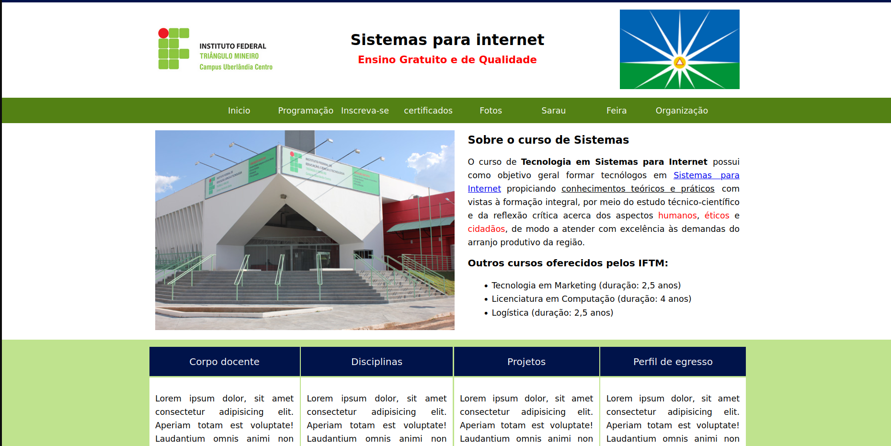
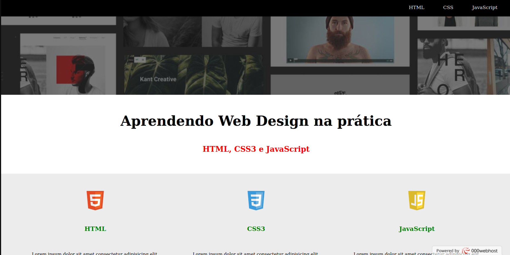
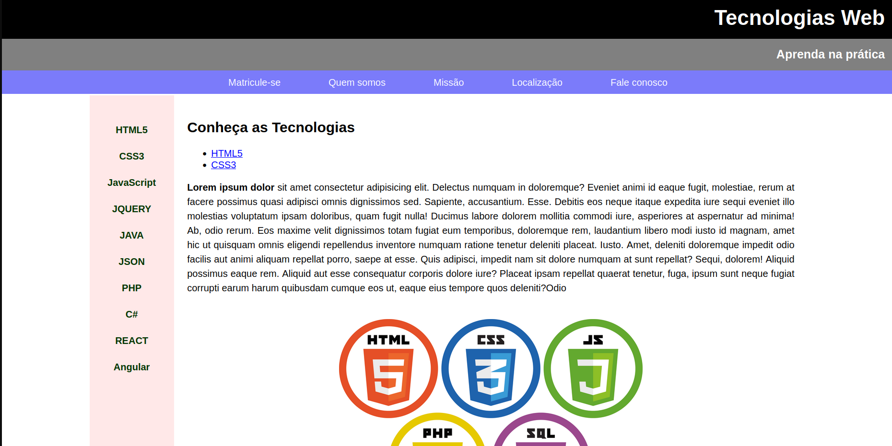

Sobre mim
Me chamo Erik Alves Vilar sou um entusiasta datecnologia , estudo e possuo conhecimento em desenvolvimento de simples sites assim como este.
Sou estudante em Sistemas para internet
no Instituto Federal do Triangulo Mineiro
no campus Uberlândia Centro
Alguns projetos já Desenvolvidos
➪ Site fantasia Institucional
➪ Landing Page ensinando sobre HTML, CSS3, JavaScript
➪ Pagina simples de tecnologias Web

Deseja saber um pouco mais sobre mim?
Minha formação
Tecnico em redes e computadores -
IFTM 20187º na Maratona de programação na UFU em 2016
Formação em Web cursos do
Bradesco
- Administração de banco de dados
Descrição: Curso voltado a criação e gerenciamento de um DB em SQL
e MySQl.
- Postura e imagem profissional
Descrição: Curso essencial para desenvolver e manter a imagem do
associado na empresa e sua
postura e sua diferenciação enquanto pessoa e associado.
- Lógica de Programação
Descrição: Curso base para absorver noções de lógica e a aplicabilidade
na programação
computacional.
Inglés Técnico - intermediario
Suporte Tecnico
- Manutenção de computadores.
- Upgrade / Downgrade
- Analise técnica.
- Instalação de SO (Windows e Linux)
- Reparo e troca de peças